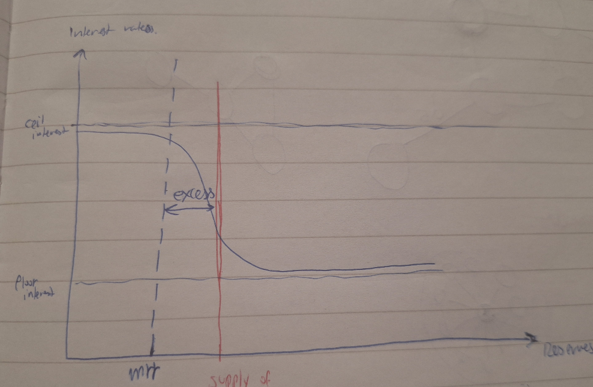

Floor and cooridor monetary policy framework

Situational description
Currently, European monetary system lives in the floor system, or the state of the system where the targeted interest rate is very close to the ceilling rate or the European deposit facility rate.
This means that current or total supply of the reserves in the commercial banking system, which are held by the central bank, is in the oversaturated part of the nonlinear response curve.
The central bank has several mechanisms how it could affect the targeted interest rate. The first, is by increasing the minimal reserve requirement balance.
The second method is by doing open market operations, tendering or extensive quantitative easing which means buying safe government bonds on the secondary market. A direct, over the counter, purchases or selling of the governments securities is not allowed.
Under floor system, the spread between the implicit interest on reserves rates or deposit facility rate and interbank rates is very low.
In another words, the supply of reserves in the central bank is over saturated and this discourages the banks with excess liquidity to borrow to other less liquid commercial banks.
Interbank communication is lower and most of the interest on excess reserves is yielded through central bank deposit facility.
Because of that, banks and financial institutions who want higher yields on their projects invest their funds mostly in traditional infrastructure, hospitality and pharmaceutical industry.
On the contrary, the corridor system increase the interbank investment volumes and there is a lot of volatility on the market and communication between the different banking parts of the system.
Job market under floor system could be characterized as the stable state where there is more focus on the research, better job quality, gradual improvement as opposite to the corridor system where there is a higher communication dynamics, monetary exchange in order to met the minimum reserve requirement. I call this state the "survivorship state" where the banks are competing for the reserves in order to meet the minimum reserve requirement.
Of course, being in the floor system doesn’t mean that there isn’t “survivorship” state of the banking system because we don’t know the underline distribution of the commercial bank current accounts. It could be the case that banks excess reserve follows the inverse power or exponential distribution dynamics where excess reserves of the bigger banks oversaturates the total reserves.